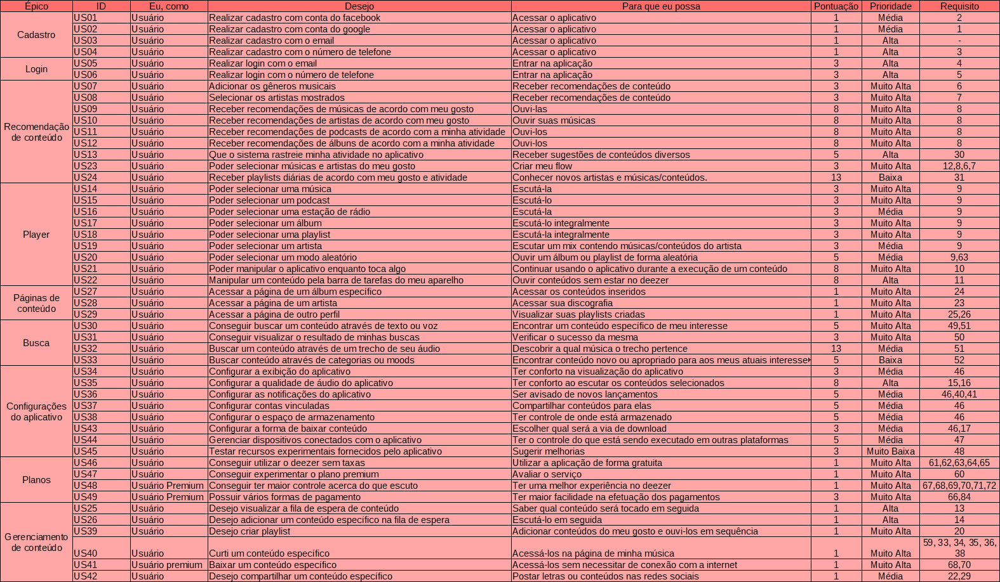

Histórias de Usuário
História de usuário é uma descrição concisa de uma necessidade do usuário do produto/requisito sob o ponto de vista desse usuário.
A história de usuário busca descrever essa necessidade de uma forma simples e leve.
Para melhor organização, separamos as histórias em seus respectivos épicos, porém listamos todos eles logo abaixo.
Versões
| Versão | Detalhes | Data |
|---|---|---|
| 1.0 | Adição da US01 até US11. | 14/10/2019 |
| 1.1 | Adição da US12 até US26. | 15/10/2019 |
| 1.2 | Adição da US30 até US33. | 15/10/2019 |
| 1.3 | Adição da US34 até US45. | 15/10/2019 |
| 1.4 | Adição da US46 até US49. | 16/10/2019 |
| 1.5 | Adição parcial do product backlog e pequenas correções. | 16/10/2019 |
| 1.6 | Adição total do product backlog e pequenas correções. | 16/10/2019 |
Participantes
- Micaella
- Samuel
- Eduardo (Priorização)
- Sofia (Priorização)
Backlog

Épicos
Cadastro
Login
Recomendação de conteúdo
Player
Páginas de conteúdo
Busca
Configurações do aplicativo
Gerenciamento de conteúdo
Planos
Listagem das Histórias de Usuário
US01: Realizar cadastro com conta do Facebook
US02: Realizar cadastro com conta do Google
US03: Realizar cadastro com o email
US04: Realizar cadastro com o número de telefone
US05: Realizar login com o email
US06: Realizar login com o número de telefone
US07: Escolha de gêneros musicais
US08: Escolha de artistas
US09: Recomendação de músicas
US10: Recomendação de artistas
US11: Recomendação de podcasts
US12: Recomendação de álbuns
US13: Rastreamento de atividade
US14: Escutar uma música
US15: Escutar um podcast
US16: Escutar uma estação de rádio
US17: Escutar um álbum
US18: Escutar uma playlist
US19: Escutar mix de um artista
US20: Escutar de forma aleatória
US21: Controlar aplicativo durante a execução de um conteúdo
US22: Controlar execução de um conteúdo pela barra de tarefas do aparelho
US23: Criação do Flow
US24: Playlists diárias
US25: Fila de espera
US26: Adicionar conteúdo à Fila de Espera
US27: Acessar página do álbum
US28: Acessar página do artista
US29: Acessar página do usuário
US30: Buscar conteúdo por texto
US31: Receber resultados
US32: Buscar conteúdo por áudio
US33: Buscar conteúdo através de categorias
US34: Configurações de exibição
US35: Configurações de áudio
US36: Configurações de notificações
US37: Configurações de compartilhamento
US38: Configurações de armazenamento
US39: Criar Playlists
US40: Curtir conteúdo
US41: Baixar conteúdo
US42: Compartilhar conteúdo
US43: Configurações de download
US44: Gerenciamento de dispositivos
US45: Recursos experimentais
US46: Utilização sem taxas
US47: Testar premium
US48: Maior controle
US49: Formas de pagamento